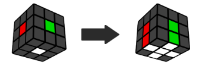
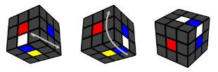
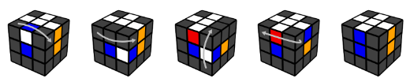
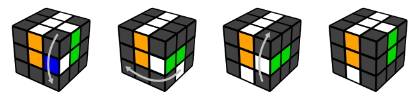

First layer cross

Hold the white center piece on top, and find an edge in the bottom layer that has white on it.
Note: An edge piece has 2 colors on it.
Look at the edge piece's other color, and turn the bottom layer so the edge is under the center of the same color.
Turn that face to bring the edge piece to the top.

Another example:

Anytime an edge piece is flipped (example above), fix it by doing the following moves:

Anytime you find a white edge piece that is not in the bottom layer, you can move it into the bottom by doing the following moves:

And then solve it like you would for any white edge in the bottom layer.
Solve all 4 of the white edge pieces to make a cross. Make sure you always look at both colors on each piece so that you end up with the side colors matching as well.